Show other papers
A Two-Branch Finite-Field Construction for Regular CSS LDPC Bases
Authors: Koki Okada, Kenta Kasai
Type: theory · Category: quantum information and computing · PDF: https://arxiv.org/pdf/2605.23894v1
Analysis basis: full PDF text, analyzed in chunks
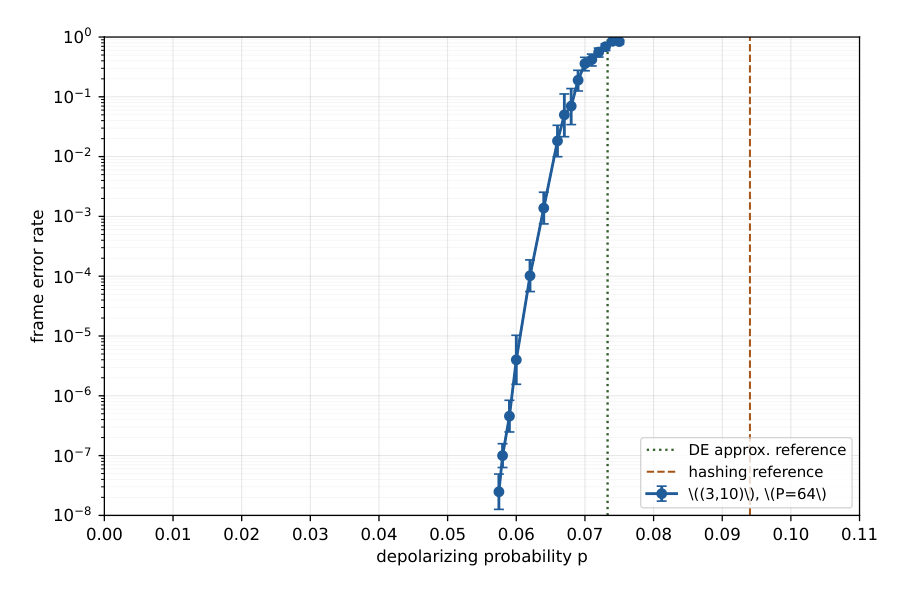
Summary. This paper presents a systematic algebraic method to construct regular CSS quantum LDPC codes by using finite field cosets to manage parity-check matrix constraints. It demonstrates that this construction can produce large-scale, high-rate codes with excellent error-correction performance and verifiable distance properties.
Why it may be interesting. not directly relevant
Detailed structure
Main problem. The difficulty of constructing regular, finite-length CSS quantum LDPC codes that simultaneously satisfy the CSS commutation requirement, maintain high girth (avoiding short cycles), and suppress low-weight logical operators.
Main result. The development of a two-branch multiplicative-coset construction over finite fields that systematically produces regular CSS bases, demonstrated by a high-performance [[10240, 4108, 10 <= d <= 32]] code with an extremely low frame error rate at p=0.058.
Method. A two-stage design process involving a finite-field-based base matrix construction to fix degree distribution and initial girth, followed by a cyclic lifting stage using Circulant Permutation Matrices (CPM) subject to algebraic congruence constraints.
Model / system. The paper focuses on the construction and decoding of regular Calderbank-Shor-Steane (CSS) quantum low-density parity-check (QLDPC) codes under a depolarizing noise channel.
Key observables. Frame Error Rate (FER), minimum distance (d), code rate (R), and girth (specifically the exclusion of 4-cycles and 6-cycles).
Important parameters / regimes. Depolarizing probability p = 0.058, code parameters [[10240, 4108, 10 <= d <= 32], and (3, 10)-regularity.
Assumptions / limitations. The construction relies on sufficient (but not necessarily necessary) algebraic certificates for orthogonality and cycle exclusion; the distance certificate is a lower bound rather than an exact value.
Figures summary. Figure 1 shows a plot of the Frame Error Rate (FER) versus the depolarizing probability p, compared against the quantum hashing bound and a density evolution reference.
Paper structure. The paper introduces the construction problem, details the two-branch finite-field method for base matrices, describes the algebraic constraints for the lifting stage, provides a concrete high-performance example, and concludes with decoding performance evaluations.
Abstract
This paper develops a two-branch multiplicative-coset construction for regular Calderbank-Shor-Steane (CSS) quantum low-density parity-check base matrices. For a target column weight \(J\) and an even row weight \(L\), the method reduces regularity, CSS orthogonality, and same-type 4-cycle exclusion to explicit quotient-coset conditions over a finite field. A normalized exhaustive search for these conditions produces base matrices for several \((J,L)\) pairs, so the construction is not tied to a single degree distribution. The construction separates the finite-length design into two stages: the base matrix fixes the degree distribution and the first girth constraints, and a cyclic lift randomizes edge connections subject to exact algebraic checks. As a detailed example, we carry one \((3,10)\)-regular base through the lift and decoding stages. For this example, the selected 64-fold lift gives a code whose same-type Tanner graphs have girth at least eight, and it also excludes a specified weight-16 nondegenerate logical-support orbit. The resulting instance is a \([[10240,4108,\,10\le d\le32]]\) CSS code. For decoding, we use joint log-domain belief propagation together with low-complexity deterministic post-processing rules for small residual syndromes, including repairs for residual patterns with two unsatisfied checks. The frame error rate (FER) measurements provide finite-length decoding data for this detailed example; at depolarizing probability \(p=0.058\), the post-processing FER is \(1.0\times10^{-7}\).
Ancilla-Efficient QSAMPLE Preparation for Reversible Markov Chains
Authors: Nicholas Zhao
Type: theory · Category: quantum information and computing · PDF: https://arxiv.org/pdf/2605.23442v1
Analysis basis: full PDF text, analyzed in chunks
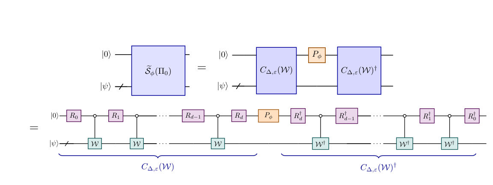
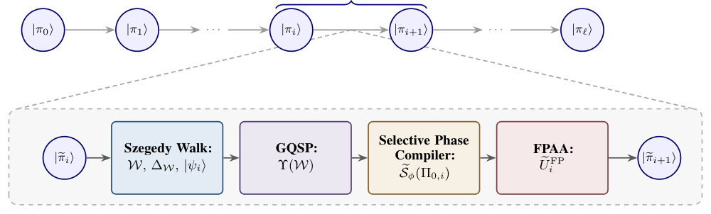
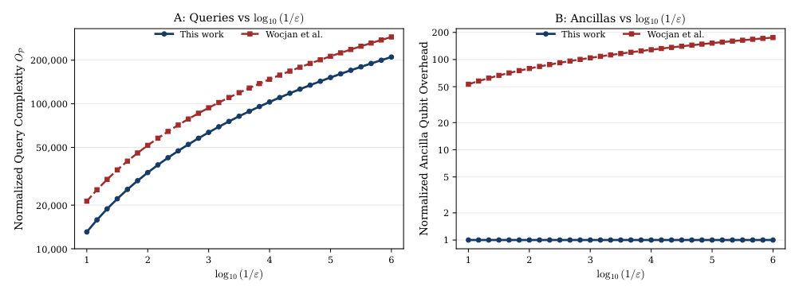
Summary. This paper introduces a more efficient quantum algorithm for preparing quantum states that represent the stationary distributions of Markov chains. It achieves a significant reduction in the number of required ancilla qubits and improves the scaling of the computational cost relative to the overlap between states in a cooling schedule.
Why it may be interesting. not directly relevant
Detailed structure
Main problem. Developing an efficient quantum algorithm for preparing QSAMPLEs (coherent encodings of stationary distributions of reversible Markov chains) while minimizing ancilla qubit overhead and query complexity.
Main result. The authors present an end-to-end framework that reduces the working-register ancilla cost to exactly one qubit and improves the query complexity dependence on the minimum overlap from 1/p_min to 1/sqrt(p_min).
Method. The approach utilizes a Selective Phase Compiler built from Generalized Quantum Signal Processing (GQSP) and integrates it with Fixed-Point Amplitude Amplification (FPAA) to rotate through a sequence of stationary states.
Model / system. The framework targets reversible, ergodic Markov chains on a finite state space, with a specific application to preparing Gibbs distributions for an Ising ladder model.
Key observables. Trace distance (D_tr) and Total Variation Distance (d_TV) between the prepared and target distributions.
Important parameters / regimes. Minimum overlap (p_min), spectral gap (delta), phase gap (Delta_W), and the number of stages in the cooling schedule (l).
Assumptions / limitations. The Markov chains must be reversible and ergodic; the algorithm assumes oracle access to the transition matrix and known lower bounds on overlaps and spectral gaps.
Figures summary. Figure 1 shows the GQSP-based selective-phase compiler structure; Figure 2 illustrates the algorithm's progression; Figure 3 compares the proposed method's query complexity and ancilla overhead against previous frameworks.
Paper structure. The paper introduces the QSAMPLE problem, presents the new GQSP-based selective phase compiler, details the integration with FPAA for an end-to-end algorithm, provides a rigorous complexity analysis, and demonstrates application to Gibbs state preparation.
Abstract
Preparing quantum samples (QSAMPLES), coherent encodings of stationary distributions of reversible Markov chains, is a fundamental primitive in quantum sampling, particularly for quantum simulated annealing. A central limitation of existing phase-estimation-based frameworks is the ancilla qubit overhead. In this work, we present a new end-to-end framework requiring only one ancilla qubit in the working register. The key technical ingredient is a selective phase compiler circuit using one ancilla qubit, built from a generalized quantum signal processing (GQSP)-based projector onto the 1-eigenspace of the qubitized Szegedy walk. Embedding these selective phase compilers into the fixed-point amplitude amplification (FPAA) procedure and iterating yields a quantum algorithm that, given an initial state, oracle access, lower bounds on the overlaps between adjacent states, and lower bounds on the phase gaps, outputs a QSAMPLE within any desired trace distance and thus total variation distance. The query complexity scales inversely with the square roots of both the minimum overlap and the minimum spectral gap of the Markov chains across the cooling schedule, up to polylogarithmic factors. We also perform simulations to verify how our qubit and query complexity evolve with the trace distance, and how this work compares to the previous framework. These results establish two improvements over the previous framework by Wocjan and Abeyesinghe. First, the working-register ancilla cost is reduced to one. Second, by inserting our GQSP-based selective phase compiler into the FPAA procedure, we improve the QSAMPLE transport overlap dependence from inverse minimum overlap to inverse square-root minimum overlap, relative to their Grover pi-over-three fixed-point method. Finally, as a direct application, we apply the quantum algorithm to prepare a Gibbs QSAMPLE and obtain a rigorous complexity analysis.
Asymmetric Scaling Laws from Sparse Features
Authors: John Sous, Michael Winer
Type: both · Category: disordered systems and neural networks · PDF: https://arxiv.org/pdf/2605.23591v1
Analysis basis: full PDF text, analyzed in chunks
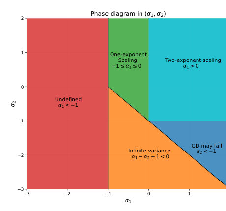
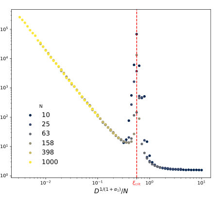
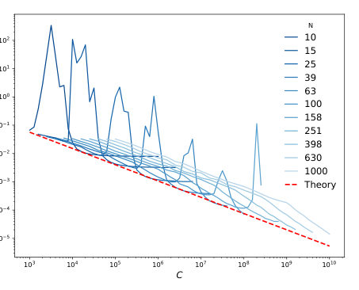
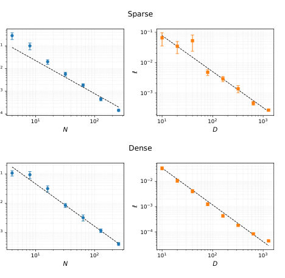
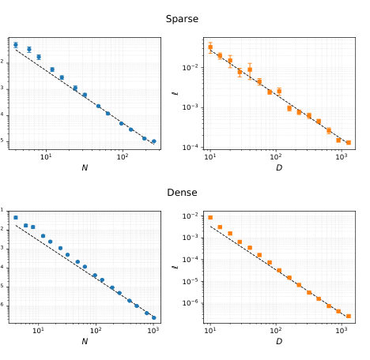
Summary. This paper identifies sparsity as the mechanism behind the asymmetric scaling laws observed in large-scale neural networks. It proves that sparse features cause the error to decay at different rates for model size versus dataset size, suggesting that increasing data is more efficient than increasing model capacity when features are sparse.
Why it may be interesting. not directly relevant
Detailed structure
Main problem. Explaining the origin of asymmetric scaling laws in neural networks, where the power-law exponents for model size and dataset size differ due to sparse feature activations.
Main result. The authors show that sparsity creates a bottleneck that induces a two-exponent scaling regime and shifts the compute-optimal strategy toward larger datasets rather than larger models.
Method. The study uses asymptotic analysis of Bayes-optimal loss, spectral analysis of the feature covariance matrix, and numerical experiments with linear and ReLU-activated random feature models.
Model / system. A random feature model where high-dimensional inputs have sparse activations following a power-law distribution and a variance structure controlled by sparsity and decay indices.
Key observables. Test loss scaling exponents (alpha_N, alpha_D), probability of gradient descent divergence, and compute-optimal frontier.
Important parameters / regimes. Sparsity index (alpha_1), variance decay index (alpha_2), model size (N), dataset size (D), and compute budget (C).
Assumptions / limitations. Assumes high-dimensional limits (M >> N, D), independent input coordinates, and a fixed random feature map (linear or ReLU).
Figures summary. Figure 1 shows a phase diagram in the (alpha_1, alpha_2) plane delineating scaling regimes and GD stability; Figure 4 compares test loss scaling for sparse vs. dense models under ReLU activation.
Paper structure. The paper introduces the sparse model, derives asymptotic scaling laws for under- and overparameterized regimes, analyzes compute-optimal resource allocation, investigates gradient descent stability, and validates findings via numerical experiments with nonlinear activations.
Abstract
We introduce a model for neural scaling laws under sparse activations. In the model, test loss is often dominated by rare coordinates that are never observed in the training input. This mechanism induces a novel bottleneck absent from dense models. We derive the asymptotic population loss in both the underparameterized and overparameterized regimes, and show that the loss exhibits a double-descent peak near the interpolation threshold -- where the number of parameters is just sufficient to fit the training data -- resulting in a loss curve governed by two distinct scaling exponents -- one for the overparameterized regime and one for the underparameterized regime -- with a gap determined by the degree of sparsity. Additionally, we derive a compute-optimal frontier that favors increasing dataset size over model capacity under fixed compute budgets. We also analyze gradient-descent dynamics and identify a scaling law for the probability that fixed-step gradient descent becomes unstable. We further show that the sparsity-induced effect persists under nonlinear activations.
Classical State Preparation for Variational Quantum Algorithms via Reinforcement Learning
Authors: Gino Kwun, Dhanvi Bharadwaj, Gokul Subramanian Ravi
Type: theory · Category: quantum information and computing · PDF: https://arxiv.org/pdf/2605.23138v1
Analysis basis: full PDF text, analyzed in chunks
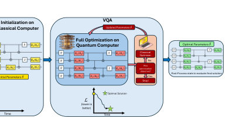
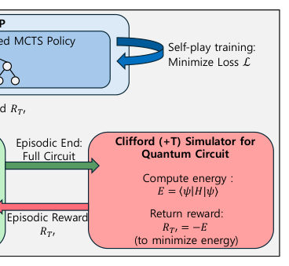

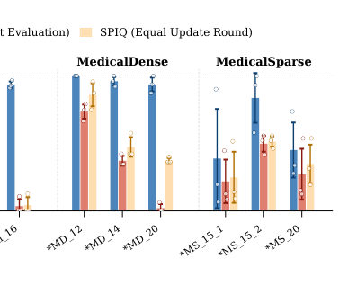
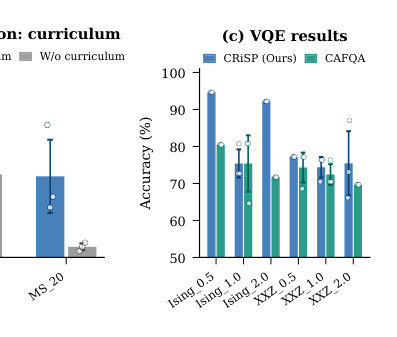
Summary. This paper introduces CRiSP, an RL-based framework that uses Transformer-guided Monte Carlo Tree Search to efficiently find optimal Clifford gate sequences for initializing variational quantum circuits. By treating state preparation as a sequential decision-making problem, it significantly improves the starting energy for QAOA and VQE, helping to mitigate the effects of barren plateaus.
Why it may be interesting. not directly relevant
Detailed structure
Main problem. Variational Quantum Algorithms (VQAs) suffer from optimization bottlenecks like barren plateaus and local minima, and existing Clifford-based initialization methods struggle to scale with large circuit search spaces.
Main result. The CRiSP framework outperforms state-of-the-art Clifford initialization methods by a mean of 3.17x in average energy accuracy and 2.44x in best-achieved energy accuracy on QAOA benchmarks.
Method. A Reinforcement Learning framework using Neural-Guided Monte Carlo Tree Search (NG-MCTS) with a Transformer-based policy and an incremental horizon curriculum learning strategy.
Model / system. The study focuses on Variational Quantum Algorithms, specifically QAOA and VQE, applied to Hamiltonians such as MaxCut, Knapsack, and 1D Ising/XXZ models.
Key observables. Ground-state energy (E_opt) and approximation accuracy (E_best / E_opt).
Important parameters / regimes. System sizes up to 22 qubits, 1,370 parameters, and various coupling strengths J for the Ising and XXZ models.
Assumptions / limitations. The method assumes that the optimal initial state can be found by prepending a discrete Clifford prefix to a fixed parameterized rotation architecture.
Figures summary. Figure 1 shows the VQA initialization workflow; Figure 2 illustrates the CRiSP framework architecture; Figure 3 displays accuracy across QAOA benchmarks; Figure 4 shows training convergence and ablation studies for the curriculum strategy.
Paper structure. The paper introduces the VQA optimization problem, presents the CRiSP RL framework and MCTS implementation, details the curriculum learning strategy, provides numerical benchmarks on QAOA and VQE tasks, and concludes with limitations and future directions.
Abstract
Variational Quantum Algorithms (VQAs) potentially offer a pathway to practical quantum advantage, but their optimization is heavily hindered by barren plateaus and numerous local minima. While classically simulable Clifford circuits can warm-start VQAs to accelerate convergence, existing heuristic-based initialization methods struggle to scale within vast combinatorial search spaces. To overcome this bottleneck, we propose CRiSP (a Clifford Reinforcement Learning agent for State Preparation), a framework that formulates discrete prefix selection as a sequential decision-making problem. CRiSP utilizes Neural-Guided Monte Carlo Tree Search, driven by a Transformer-based policy trained via self-play, to insert learned Clifford gates before fixed parameterized rotations. This enables the construction of high-quality initial states entirely through polynomial-time classical stabilizer simulation without altering the underlying circuit architecture. By integrating a curriculum learning strategy that progressively expands the search horizon, the agent efficiently scales to deep circuits. Evaluated on QAOA benchmarks of up to $22$ qubits and $1{,}370$ parameters, CRiSP outperforms state-of-the-art Clifford initialization methods by a mean of $3.17\times$ (max $45.02\times$) in average energy accuracy and $2.44\times$ (max $16.01\times$) in best-achieved energy accuracy. Assessments on VQE tasks further demonstrate the framework's robustness and generalizability.
Exact solution of generalized gauge-invariant Ising chains with multi-spin interactions
Authors: Pavel Khrapov, Stepan Shchurenkov
Type: theory · Category: statistical mechanics · PDF: https://arxiv.org/pdf/2605.23228v1
Analysis basis: full PDF text, analyzed in chunks
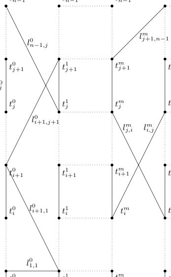
Summary. This paper provides exact analytical solutions for a generalized class of gauge-invariant Ising models with multi-spin interactions. By using the transfer-matrix method, the authors characterize the phase structure of these models, specifically distinguishing between confinement and deconfinement regimes through the scaling behavior of Wilson loops.
Why it may be interesting. not directly relevant
Detailed structure
Main problem. Obtaining exact solutions for the partition function, correlation functions, and Wilson loops in generalized gauge-invariant Ising chains with multi-spin interactions.
Main result. The authors derive explicit analytical expressions for the partition function and gauge-invariant observables for n-chain models (n=1 to 4) and identify regimes of confinement (area-law) and deconfinement (perimeter-law).
Method. The transfer-matrix method is used alongside a two-step transformation involving the elimination of gauge redundancy and the reduction of the model to an effective Ising model.
Model / system. A class of generalized gauge-invariant n-chain Ising models (n=1, 2, 3, 4) on a strip lattice with Z2 local gauge symmetry and multi-spin interactions.
Key observables. Partition function, gauge-invariant correlation functions, and Wilson loops of arbitrary width.
Important parameters / regimes. Number of chains (n), link interaction strength (beta_l), plaquette interaction strength (beta_p), and the thermodynamic limit (L -> infinity).
Assumptions / limitations. The Hamiltonian is assumed to be translationally invariant and symmetric; the gauge group is Z2; explicit spectral formulas are limited to small n.
Figures summary. Figure 1 shows the strip lattice geometry; Figure 2/3/4 illustrate transformations between different chain models; Figure 7 shows Wilson loop exponent plots for different widths; Figure 8 shows the phase diagram via surface plots of the Wilson loop increment ratio.
Paper structure. The paper begins by defining the lattice and gauge group, proceeds to develop transformations for gauge redundancy elimination and model reduction, presents the transfer-matrix construction and spectral decomposition, and concludes with the analysis of Wilson loops and phase diagrams.
Abstract
In this work, exact solutions are obtained for a class of generalized gauge-invariant $n$-chain Ising models ($n=1,2,3,4$) with arbitrary multi-spin interactions that are invariant under the local $\mathbb{Z}_2$ gauge group. On a strip lattice of finite length $L$ and width $n$ with periodic or free boundary conditions, an explicit expression for the partition function is derived using the transfer-matrix method. Two successive transformations are developed: elimination of gauge redundancy and reduction of the original model to an effective $n$-chain Ising model with all possible interactions between neighboring vertical layers. On the basis of the spectral decomposition of the $2^n\times 2^n$ transfer matrix, general formulas are obtained for gauge-invariant correlation functions and Wilson loops of arbitrary width. For $n \le 3$, explicit expressions are derived in terms of eigenvalues and eigenvectors. A detailed analysis of the behavior of the Wilson loop is performed, which allows us to identify regimes exhibiting area-law (confinement-like) and perimeter-law (deconfinement-like) dependence. For specific Hamiltonians, the string tension is computed and the corresponding phase diagrams are constructed. The results generalize and substantially extend the classical works on the gauge-invariant Ising model.
Field evolution of the magnetic structure and spin Hamiltonian in Cs$_2$RuO$_4$
Authors: S. D. Nabi, E. Ressouche, D. G. Mazzone, J. Lass, R. Sibille, Z. Yan, S. Gvasaliya, A. Zheludev
Type: both · Category: strongly correlated electrons · PDF: https://arxiv.org/pdf/2605.23363v1
Analysis basis: full PDF text, analyzed in chunks
Summary. This paper provides a quantitative description of the magnetic phase transition in the frustrated quantum magnet Cs2RuO4 under an applied magnetic field. By combining neutron scattering with SU(3) spin-wave theory, the authors successfully resolved the exchange parameters of the spin Hamiltonian and confirmed the existence of a quantum critical point.
Why it may be interesting. not directly relevant
Detailed structure
Main problem. The study aims to track the field evolution of the magnetic structure in Cs2RuO4 across a quantum critical point and resolve previously undetermined exchange parameters in its spin Hamiltonian.
Main result. The researchers confirmed the continuous reorientation of the staggered moment from the b-axis to the c-axis across a QCP and used SU(3) spin-wave theory to uniquely determine the exchange interactions (J1, J2, J3, J4, J8) and anisotropy parameters.
Method. The study combines neutron diffraction and neutron spectroscopy with SU(3) generalized spin-wave theory calculations and least-squares fitting of excitation energies.
Model / system. The system is Cs2RuO4, a 4d (S=1) frustrated quantum magnet with a 3D exchange topology. The model uses a seven-parameter minimal Heisenberg Hamiltonian within an SU(3) spin-wave framework.
Key observables. Magnetic Bragg peaks, magnetic structure factors, neutron excitation spectra, and magnetization field scans.
Important parameters / regimes. Exchange interactions (J1, J2, J3, J4, J8), single-ion anisotropy (D and tilt angle beta), and the magnetic field strength (up to 6 T).
Assumptions / limitations. Assumed crystallographic domains are rotated exactly by +/- 60 degrees and that overlapping reflections occur at identical 2-theta.
Figures summary. Fig 1 shows the interaction network; Fig 2 displays peak positions and rocking curves for different domains; Fig 3 compares calculated vs observed nuclear intensities; Fig 7 shows constant-energy and energy-momentum projections of measured intensity.
Paper structure. The paper introduces the magnetic structure and interaction network, details the neutron diffraction and spectroscopy experimental setup, presents the nuclear and magnetic structure refinements, describes the SU(3) spin-wave modeling, and concludes with the resolved Hamiltonian parameters and field-induced phase evolution.
Abstract
We report neutron diffraction under applied magnetic fields and complementary zero-field neutron spectroscopy measurements on Cs$_2$RuO$_4$. Previous work [Phys. Rev. B. 112, 134436 (2025)] identified a spin-flop-like transition accompanied by a quantum critical point within the ordered phase, attributed to strong frustration between alternating single-ion anisotropy planes. Here, we quantitatively confirm the predicted field evolution of the magnetic structure using neutron diffraction. Furthermore, analysis of the excitation spectrum within an SU(3) spin-wave framework resolves previously undetermined parameters of the minimal spin Hamiltonian and lifts the associated degeneracies.
Hybrid Quantum-Classical Corrective Diffusion Modeling for Meteorological Downscaling
Authors: Rui Wang, Edoardo Pasetto, Amer Delilbasic, Morris Riedel, Kristel Michielsen, Gabriele Cavallaro
Type: both · Category: disordered systems and neural networks · PDF: https://arxiv.org/pdf/2605.23403v1
Analysis basis: full PDF text, analyzed in chunks
Summary. This paper presents a hybrid quantum-classical diffusion model designed to improve the resolution of weather forecasts. By integrating variational quantum circuits into the bottleneck of a classical diffusion model, the authors demonstrate improved prediction of extreme wind events and better multivariate consistency, while also exploring the limitations of current quantum hardware.
Why it may be interesting. not directly relevant
Detailed structure
Main problem. Investigating whether hybrid quantum-classical variational circuits can improve the accuracy and physical realism of statistical downscaling for meteorological wind fields.
Main result. The hybrid model improves MAE and CRPS relative to the classical baseline, particularly in extreme event localization and multivariate consistency, though a generalization gap exists for out-of-distribution temporal shifts.
Method. A hybrid quantum-classical extension of the CorrDiff diffusion model is used, inserting variational quantum circuit layers (HQConv ansatz) into the bottleneck of a classical UNet.
Model / system. The system involves 10m wind components (u and v) from the HRRR-mini dataset, processed through a hybrid diffusion UNet architecture with quantum layers for latent-channel mixing.
Key observables. Mean Absolute Error (MAE), Continuous Ranked Probability Score (CRPS), kinetic-energy spectra, windspeed log-PDFs, and Fractional Skill Score (FSS) for extreme events.
Important parameters / regimes. Number of processed channels (n_ch = 1, 3, 9), quantum ansatz variants (Block-A, Block-B, A+B), and simulated vs. real hardware (JIQCER-5) noise levels.
Assumptions / limitations. Assumes that quantum circuits can act as effective nonlinear feature maps for latent-channel mixing and that the bottleneck-level hybridization is sufficient for performance gains.
Figures summary. Figure 1 shows the CorrDiff workflow; Figure 2 details the hybrid PyTorch implementation; Figure 3 breaks down the quantum ansatz; Figure 4 compares wind-speed maps; Figure 5 displays structural diagnostics like spectra and PDFs.
Paper structure. The paper introduces the downscaling problem, describes the hybrid architecture and quantum ansatz, presents a benchmarking framework, evaluates performance and structural realism, assesses noise robustness and hardware deployment, and discusses generalization gaps.
Abstract
Statistical downscaling is a crucial component of the weather modeling field, where high-resolution outputs must be reconstructed from coarse-resolution inputs with the full cost of dynamical refinement. In this work, we investigate a hybrid quantum-classical corrective diffusion model for probabilistic statistical downscaling of weather fields. The proposed model inserts variational quantum circuit layers into the most compressed bottleneck of the diffusion UNet while leaving the regression branch fully classical. This placement tests whether quantum circuits can act as compact nonlinear feature maps for latent-channel mixing. We evaluate intra-channel and cross-channel ansätze on 10m wind components. On the 2020 validation set, the hybrid models remain stable, preserve the large-scale spatial organization of the generated wind fields, and improve both MAE and CRPS relative to a classical corrective diffusion model in several configurations. Structural diagnostics further show that the hybrid variants preserve kinetic-energy spectra and windspeed distributions similar to its classical counterpart while producing controlled changes in tail behavior, extreme-windspeed localization, and joint wind field components structure. Backend studies on the 2020 validation set show negligible impact from simulated device noise at the tested circuit scale, whereas real-hardware deployment remains limited by qubit availability and execution fidelity. The 2021 out-of-distribution test shows that these in-distribution gains do not transfer uniformly under temporal shift, revealing a generalization gap that motivates future mitigation through stabilization and regularization. These results show that bottleneck-level quantum hybridization can make a nontrivial contribution to weather statistical downscaling, while also highlighting that circuit scale and hardware deployment remain key limiting factors.
Noise and Configuration Recovery Impact on Quantum Selected Configuration Interaction
Authors: Nonia Vaquero-Sabater, Abel Carreras, Lukas Broers, Tomonori Shirakawa, Seiji Yunoki, David Casanova
Type: both · Category: quantum information and computing · PDF: https://arxiv.org/pdf/2605.23697v1
Analysis basis: full PDF text, analyzed in chunks
Summary. This paper explores the performance of a hybrid quantum-classical method for electronic structure calculations. It demonstrates that while ideal quantum sampling is limited, the presence of noise and the use of classical configuration recovery can significantly improve the accuracy of energy estimations during molecular dissociation.
Why it may be interesting. It provides a counter-intuitive perspective on NISQ-era computing, suggesting that hardware noise can be a constructive resource for exploring large Hilbert spaces when paired with classical post-processing.
Detailed structure
Main problem. Investigating how hardware noise and configuration recovery procedures impact the performance of Quantum-Selected Configuration Interaction (QSCI) using the LUCJ ansatz.
Main result. The study reveals a 'noise paradox' where sampling noise can actually enhance Hilbert-space exploration, and that the configuration recovery process is the critical driver for achieving accurate energies.
Method. A hybrid quantum-classical approach using the LUCJ ansatz, comparing noiseless simulations, controlled noise models, and random sampling, all processed via an iterative classical configuration recovery algorithm.
Model / system. The dissociation of the Nitrogen molecule (N2) in a large active space (10 electrons in 26 orbitals) using the cc-pVDZ basis set.
Key observables. Ground-state CI energies, potential energy curves, configuration space compactness, and Hilbert-space exploration efficiency.
Important parameters / regimes. Interatomic distance (dissociation regime), noise level (parameter p), number of circuit layers, and number of recovery iterations.
Assumptions / limitations. The noise model is simplified to a single bit-flip parameter, and the study assumes the importance of the Hartree-Fock determinant in the subspace.
Figures summary. Figure 1 compares QSCI energy profiles for different LUCJ variants against reference standards; Figure 2 shows the impact of noise levels and recovery iterations on energy profiles; Figure 3 demonstrates how recovery drives random configurations toward accurate energies; Figure 4 correlates noise levels with the size of the explored Hilbert space.
Paper structure. The paper introduces the QSCI/LUCJ framework, presents benchmarks for N2 dissociation, analyzes the impact of noise on sampling, evaluates the efficacy of configuration recovery, and concludes with the synergy between noise and recovery.
Abstract
Quantum-selected configuration interaction (QSCI) is a promising hybrid quantum-classical approach in which a quantum device generates configurations for subsequent classical diagonalization. Here, we analyze the performance of QSCI combined with the local unitary cluster Jastrow (LUCJ) ansatz, focusing on the interplay between ansatz expressivity, sampling, noise, and configuration recovery. Using the dissociation of N2 in a large active space as a benchmark, we show that noiseless LUCJ sampling produces compact and biased configurational spaces, limiting the accuracy of the resulting CI energies, particularly in strongly correlated regimes. By introducing a simple noise model, we demonstrate that sampling noise can enhance Hilbert-space exploration by generating additional configurations beyond those supported by the ideal ansatz. When combined with configuration recovery, this leads to systematically improved energies. Moreover, recovery alone (starting from randomly generated configurations) can efficiently construct accurate CI spaces, highlighting its central role in QSCI.
Non-normal spectral signatures of instability in neural network training dynamics
Authors: Souvik Ghosh
Type: theory · Category: disordered systems and neural networks · PDF: https://arxiv.org/pdf/2605.23476v1
Analysis basis: full PDF text, analyzed in chunks
Summary. This paper identifies that the instability in neural network training arises from the non-normal nature of modern optimizers. It demonstrates that traditional stability metrics like the spectral radius are insufficient, proposing instead that the eigenvector condition number can predict transient growth and loss spikes. This provides a new mathematical language for understanding optimization stability through the lens of non-Hermitian physics.
Why it may be interesting. not directly relevant
Detailed structure
Main problem. The lack of a rigorous operator-theoretic explanation for training instabilities like loss spikes and oscillatory convergence in deep neural networks, particularly why standard spectral radius criteria fail to predict them.
Main result. The authors prove that Adam and SGD with momentum are generically non-normal operators, and that the eigenvector condition number kappa(V) serves as a superior early-warning indicator for transient amplification compared to the spectral radius.
Method. Application of non-Hermitian operator theory, pseudospectral analysis, and the Kreiss matrix theorem to the linearized update maps of modern optimizers.
Model / system. The system consists of the training dynamics of deep neural networks, specifically modeled via linearized update operators for Adam (using a Hessian and diagonal preconditioner) and SGD with momentum (using an augmented state-space structure).
Key observables. Eigenvector condition number kappa(V), spectral radius rho(J), Kreiss constant K(J), epsilon-pseudospectrum, and Hessian sharpness.
Important parameters / regimes. Momentum parameter beta, learning rate eta, and the commutator [H, M] between the Hessian and preconditioner.
Assumptions / limitations. The analysis uses a quasi-static approximation for Adam (assuming the preconditioner evolves slowly) and focuses on the linearized regime of training dynamics.
Figures summary. Figure 1 shows training loss spikes alongside the elevation of kappa(V) during instability; Figure 2 demonstrates the reproducibility of the spectral radius failure across different random seeds.
Paper structure. The paper introduces the problem of instability, proves the non-normality of Adam and SGD, develops a pseudospectral stability framework, validates this with numerical experiments on two-layer networks, and discusses the connection to exceptional points and gradient clipping.
Abstract
Training instabilities in deep networks - loss spikes, oscillatory convergence, and gradient pathologies - are empirically prevalent but lack a rigorous operator-theoretic explanation. We show that the linearized update operators for practically used optimizers are generically non-normal: for Adam, non-normality is controlled by the commutator [H, M] between the Hessian and the diagonal adaptive preconditioner, while for SGD with momentum it arises from the augmented state-space structure of the update map. Applying non-normal stability theory to these operators, we derive a conservative pseudospectral precursor bound in which κ(V) serves as an early-warning indicator of transient amplification even when the spectral radius remains below one, and we establish that exceptional points of the update operator appear as the κ(V) -> \infty limiting case of this framework. Numerical experiments on two-layer networks confirm that the spectral radius ρ(J) provides no separation between stable and unstable training phases while κ(V) separates them by approximately one order of magnitude, complementing the classical sharpness criterion with a continuous severity measure of non-normal amplification. These results establish non-Hermitian operator theory as a useful and underexplored framework for neural network optimization stability, offering a diagnostic language and proof-of-concept benchmark for understanding adaptive optimization stability.
On the Approximate Non-Deterministic Degree of Total Boolean Functions
Authors: Samruddhi Pednekar, Supartha Podder
Type: theory · Category: other · PDF: https://arxiv.org/pdf/2605.23336v1
Analysis basis: full PDF text, analyzed in chunks
Summary. This paper provides the first systematic progress on the conjecture that the approximate degree of a Boolean function is polynomially bounded by the joint approximate non-deterministic degrees of the function and its complement. It proves this relationship for several important classes of functions, including monotone, symmetric, and read-k DNF formulas. The work advances the understanding of the hierarchy of Boolean complexity measures.
Why it may be interesting. not directly relevant
Detailed structure
Main problem. The paper investigates the relationship between various complexity measures of total Boolean functions, specifically focusing on the 'Approximate Non-Deterministic Degree Conjecture'.
Main result. The authors establish the conjecture that the approximate degree is polynomially bounded by the joint approximate non-deterministic degrees of a function and its complement for several classes, including monotone, unate, symmetric, and read-k DNF functions.
Method. The work employs polynomial construction, variable restrictions, induction on alternation numbers, and graph-theoretic approaches to relate different complexity measures.
Model / system. The study is set in the domain of total Boolean functions f: {0, 1}^n -> {0, 1}, analyzing measures like approximate degree, rational degree, and decision tree complexity.
Key observables. Approximate non-deterministic degree (N_epsilon(f)), decision tree complexity (D(f)), certificate complexity (C(f)), and block sensitivity (bs(f)).
Important parameters / regimes. The error parameter epsilon (0 < epsilon < 1), alternation number (alt(f)), and the read-k parameter for DNF formulas.
Assumptions / limitations. The results are proven for specific classes of functions such as monotone, unate, and symmetric functions; the bounds for general functions depend on the alternation number.
Figures summary. A directed graph illustrating the polynomial relationships between various Boolean function complexity measures.
Paper structure. The paper introduces the conjecture, defines the mathematical framework of approximate non-deterministic degree, and then provides systematic proofs for various function classes (monotone, zebra, symmetric, DNF, and hypergraph properties) before discussing limitations and open questions.
Abstract
The approximate non-deterministic degree of a Boolean function $f$, denoted $\mathsf{ndeg}_ε(f)$ (written $\mathsf{N}_ε(f)$ for brevity), is the minimum degree of a real polynomial $p$ such that $0 \le |p(x)| \le ε$ whenever $f(x) = 0$, and $|p(x)| \ge 1$ whenever $f(x) = 1$. Unlike exact non-deterministic degree, which only requires the polynomial to be nonzero on $1$-inputs, this measure enforces a uniform gap: the polynomial must stay close to zero on all $0$-inputs and bounded away from zero on all $1$-inputs. The rational degree conjecture, open for over three decades, was recently resolved by Kothari, Kovacs-Deak, Wang, and Yang, who showed that for every total Boolean function $f$, \[ deg(f) \le \widetilde O\!\left(\operatorname{rdeg}(f)^3\right). \] In their paper, they explicitly propose a stronger conjecture: that approximate degree is polynomially bounded by $\mathsf{N}_ε(f)$ and $\mathsf{N}_ε(\overline{f})$ jointly, i.e., for every total Boolean function $f$ and every constant $0<ε<1$, \[ \widetilde{deg}(f) \le \operatorname{poly}(\mathsf N_ε(f), \mathsf N_ε(\overline f)). \] This conjecture, if true, would imply a polynomial version of the rational degree result and bring us closer to resolving de Wolf's longstanding non-deterministic degree conjecture. In this work, we make the first systematic progress on this problem, establishing the conjecture for several broad and natural function classes: monotone and unate functions, functions of bounded alternation number, symmetric functions, $k$-uniform hypergraph properties, and read-$k$ Disjunctive Normal Form (DNF) formulas.
Optimizing Parallel Execution of Commuting Pauli Product Rotations
Authors: Sayam Sethi, Devika Nambisan, Jonathan Mark Baker
Type: theory · Category: quantum information and computing · PDF: https://arxiv.org/pdf/2605.23738v1
Analysis basis: full PDF text, analyzed in chunks
Summary. This paper introduces two heuristics to reduce the execution depth of quantum circuits in fault-tolerant architectures by optimizing how commuting Pauli rotations are grouped under hardware port constraints. By reshuffling commuting groups and restructuring their generators, the authors demonstrate significant reductions in circuit depth on standard benchmarks.
Why it may be interesting. not directly relevant
Detailed structure
Main problem. Hardware constraints on the number of available X and Z ports per qubit in fault-tolerant architectures force the splitting of commuting Pauli Product Rotations, which increases total circuit depth.
Main result. The proposed combination of clique reshuffling and generator restructuring achieves an average reduction in hardware-limited circuit depth of 10-20%, with peak reductions of up to 50%.
Method. Two heuristics are proposed: clique reshuffling, which permutes commuting products to optimize group formation, and generator restructuring, which rewrites groups using equivalent sets to reduce per-qubit port pressure.
Model / system. The study focuses on Fault-Tolerant Quantum Computation (FTQC) using the surface code architecture with lattice surgery, specifically within the Pauli-Based Computing (PBC) framework.
Key observables. Circuit depth, Pauli weight, and port usage (X and Z edges per qubit).
Important parameters / regimes. Port budget (number of X/Z access points), Pauli density, qubit count, and circuit depth.
Assumptions / limitations. The optimization assumes the surface code with lattice surgery, assumes the input circuit is already compiled into PPMs, and assumes unconstrained routing.
Figures summary. Figure 1 outlines the problem of port-constrained execution; Figure 2 shows the compilation workflow; Figures 3-5 illustrate the mechanics and sensitivity of the reshuffling and greedy heuristics; Figure 6 shows depth reduction across various benchmarks; Figure 7 shows performance scaling with the number of available hardware ports.
Paper structure. The paper introduces the problem of depth inflation due to port limits, describes the proposed reshuffling and restructuring heuristics, presents a benchmarking study using QASMBench, and analyzes the scaling of performance with respect to port budget and circuit density.
Abstract
Fault-Tolerant Quantum Computation (FTQC) permits parallel execution of mutually commuting Pauli Product Rotations (PPRs), but per-qubit access point/port limits (e.g. two X and two Z edges on the surface code) force commuting groups that exceed the budget to be split, inflating circuit depth. We propose two heuristics for reducing this hardware-limited depth: 1. clique reshuffling, which permutes commuting products and re-forms port-constrained groups, and 2. generator restructuring, which rewrites each group as an equivalent generating set with reduced per-qubit port pressure. On QASMBench circuits compiled to PPRs, we combine the two heuristics and observe an average hardware-limited depth reduction of $10-20\%$ over a non-reordering baseline, with up to $50\%$ reduction. These observed gains scale with the per-qubit port budget and saturate near $20$ ports, suggesting these heuristics remain relevant as hardware exposes more access points.
← Index · ← Previous · Next →